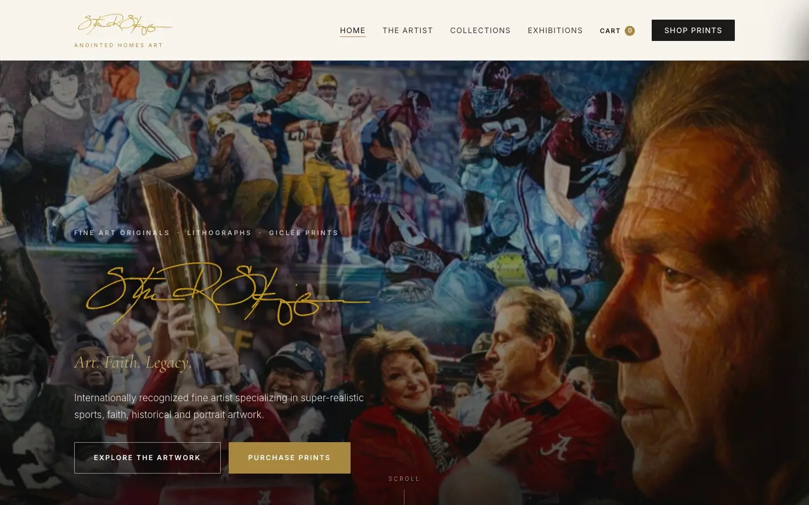
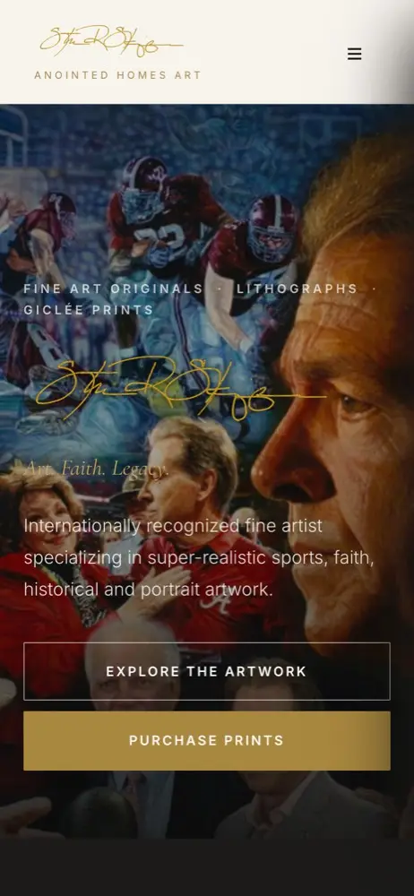
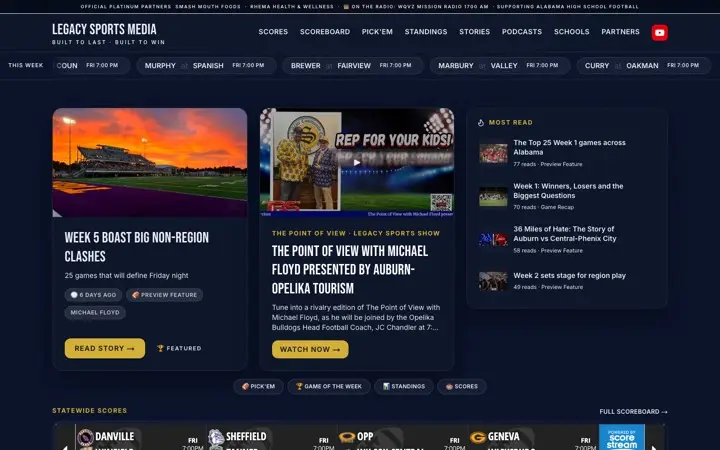

Steve R. Skipper Studio
Steve R. Skipper is a Birmingham-area fine artist known for super-realistic sports, faith, historical, and portrait work. His new site puts the paintings first.


The problem
The artwork is the product, and the old site buried it. Collections were hard to browse, images were small, and the path from “I love this painting” to buying a print was not obvious.
What we built
A dark, gallery-style site built around full-bleed artwork: the artist’s story, collections by subject, exhibitions, and a clear route to purchase prints. The existing print store stays in place, so inventory, sizes, and checkout did not need to move.
How we worked
A strict rule on this project: nothing invented. Every title and description is taken from the artist’s own material, and each image was checked against its product page before it was labeled.
Legacy Sports Media

Legacy Sports Media
Alabama high-school sports platform — scores, standings, stories, podcasts, and a newsroom admin.
Read the case study
Vardar Transportation
Luxury van rentals and chauffeured travel in Birmingham — booking requests plus an owner dashboard.
Read the case studyNeed something like Steve R. Skipper Studio?
Tell us about your business in a two-minute form. You will get a call, a fixed written quote, and a realistic timeline — usually within one business day.